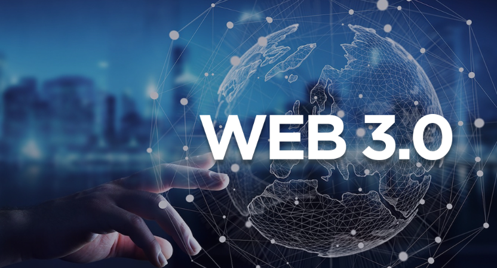
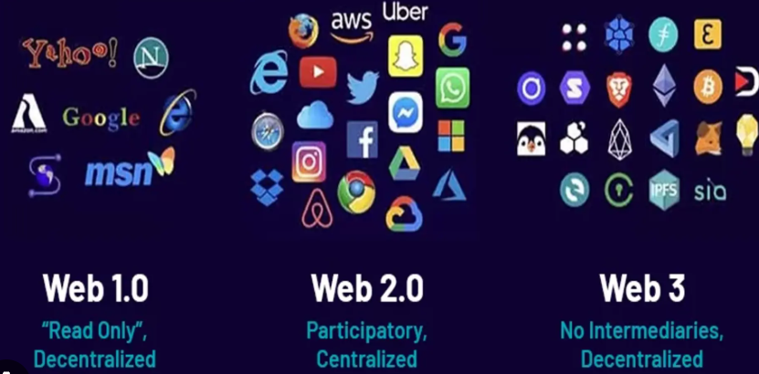

<!DOCTYPE html>
<html lang="en"></html>
<head>
    <meta charset="UTF-8">
    <meta name="viewport" content="width=device-width, initial-scale=1.0">
    <nav>
        <a href="index.html">Home</a>&#65372;
        <a href="www.html">World Wide Web</a>&#65372;
        <a href="tcpip.html">TCP/IP</a>&#65372;
        <a href="http.html">HTTP</a>&#65372;
        <a href="dns.html">DNS</a>&#65372;
        <a href="html.html">HTML</a>&#65372;
        <a href="webserver.html">Web Server</a>&#65372;
        <a href="webbrowser.html">Web Browser</a>&#65372;
        <a href="url.html">Uniform Resource Locator</a>&#65372;
        <a href="intranet.html">Intranet</a>&#65372;
        <a href="extranet.html">Extranet</a>&#65372;
        <a href="ftp.html">File Transfer Protocol</a>&#65372;
        <a href="web1.0.html">Web 1.0</a>&#65372;
        <a href="web2.0.html">Web 2.0</a>&#65372;
        <a href="web3.0.html">Web 3.0</a>&#65372;
        <a href="web4.0.html">Web 4.0</a>&#65372;

    </nav>
    <title>Terminology: Web 3.0</title>
     <style>
    body {
            
            background-color: #fff5f7;
            margin: 0;
            padding: 20px;
        }
        h1{
            color: #c2185b;
            font-size: 30px;
            text-transform: uppercase;
        }
        h2{
            color: #f48fb1;
            font-size: 22px;
            text-transform: uppercase;
            text-decoration: underline;

        }
        p{
            color: #333;
            font-size: 18px;
            line-height: 1.6;
            font-style: italic;
            padding: 10px;
        }
        ul{
            color: #333;
            font-size: 18px;
            line-height: 1.6;
            font-style: italic;
            padding: 10px;
        }
</style>
</head>
<body>
    <h2>Web 3.0 Definition</h2>
     
    <p>
        Web 3.0, also known as the Semantic Web, is the next evolution of the World Wide Web that aims to create a more intelligent and interconnected web experience. It focuses on enabling machines to understand and interpret data in a way that allows for more personalized and context-aware interactions. Web 3.0 incorporates technologies such as artificial intelligence, machine learning, and blockchain to enhance the functionality and usability of the web.
    </p>
    <p>
        The goal of Web 3.0 is to create a web that is more intuitive and responsive to user needs, allowing for seamless integration of data and services across different platforms and devices. It aims to provide a more personalized and immersive online experience by leveraging advanced technologies to understand user preferences and deliver relevant content and services.
    </p>
    <h2>Key Features of Web 3.0</h2>
    <ul>
        <li><strong>Semantic Understanding:</strong> Web 3.0 enables machines to understand the meaning and context of data, allowing for more intelligent search and personalized recommendations.</li>
        <li><strong>Decentralization:</strong> Web 3.0 incorporates blockchain technology to create a more decentralized web, giving users greater control over their data and online interactions.</li>
        <li><strong>Artificial Intelligence:</strong> Web 3.0 leverages AI and machine learning to provide more personalized and context-aware experiences for users.</li>
        <li><strong>Interoperability:</strong> Web 3.0 aims to create a more interconnected web experience by enabling seamless integration of data and services across different platforms and devices.</li>
    </ul>
   
    
     <h2>Applications of Web 3.0</h2>
    <h2>Impact of Web 3.0</h2>
    <p>
        Web 3.0 has the potential to revolutionize the way we interact with the web by creating a more intelligent and personalized online experience. It can enable new applications and services that are more responsive to user needs and preferences, while also providing greater control over data and online interactions. As Web 3.0 continues to evolve, it will likely have a significant impact on various industries, including e-commerce, social media, and healthcare.
    </p>
    <h2>Challenges of Web 3.0</h2>
    <p>
        Despite its potential benefits, Web 3.0 also faces several challenges, including issues related to privacy, security, and the digital divide. The increased use of AI and machine learning raises concerns about data privacy and the potential for bias in algorithms. Additionally, the decentralized nature of Web 3.0 may create new security vulnerabilities that need to be addressed. Finally, there is a risk that the benefits of Web 3.0 may not be accessible to everyone, particularly those in underserved communities or with limited access to technology.
    </p>
    <h2>Future of Web 3.0</h2>
    <p>
        The future of Web 3.0 is promising, with ongoing advancements in AI, blockchain, and other technologies that will continue to shape the web experience. As more organizations and developers adopt Web 3.0 technologies, we can expect to see new applications and services that are more personalized, intelligent, and interconnected. However, it will be important to address the challenges associated with Web 3.0 to ensure that its benefits are accessible to all users while maintaining privacy and security.
    </p>

</body>
</html>